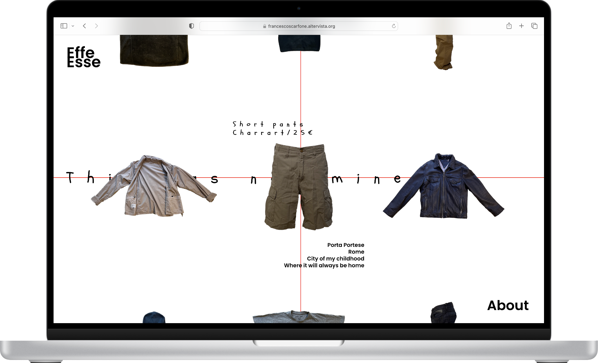
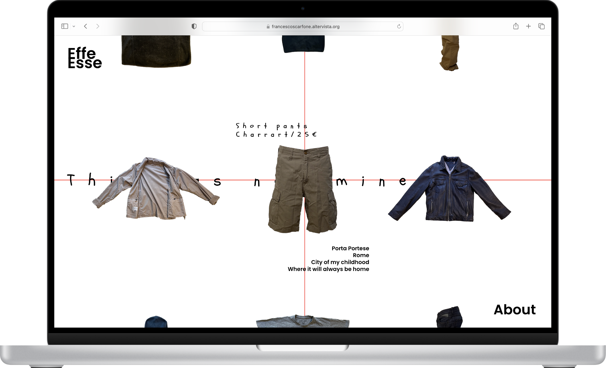
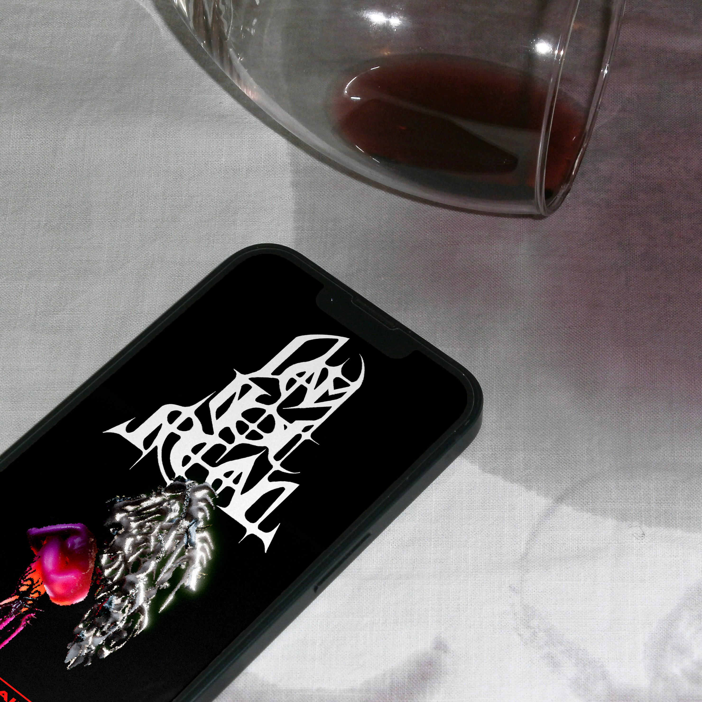
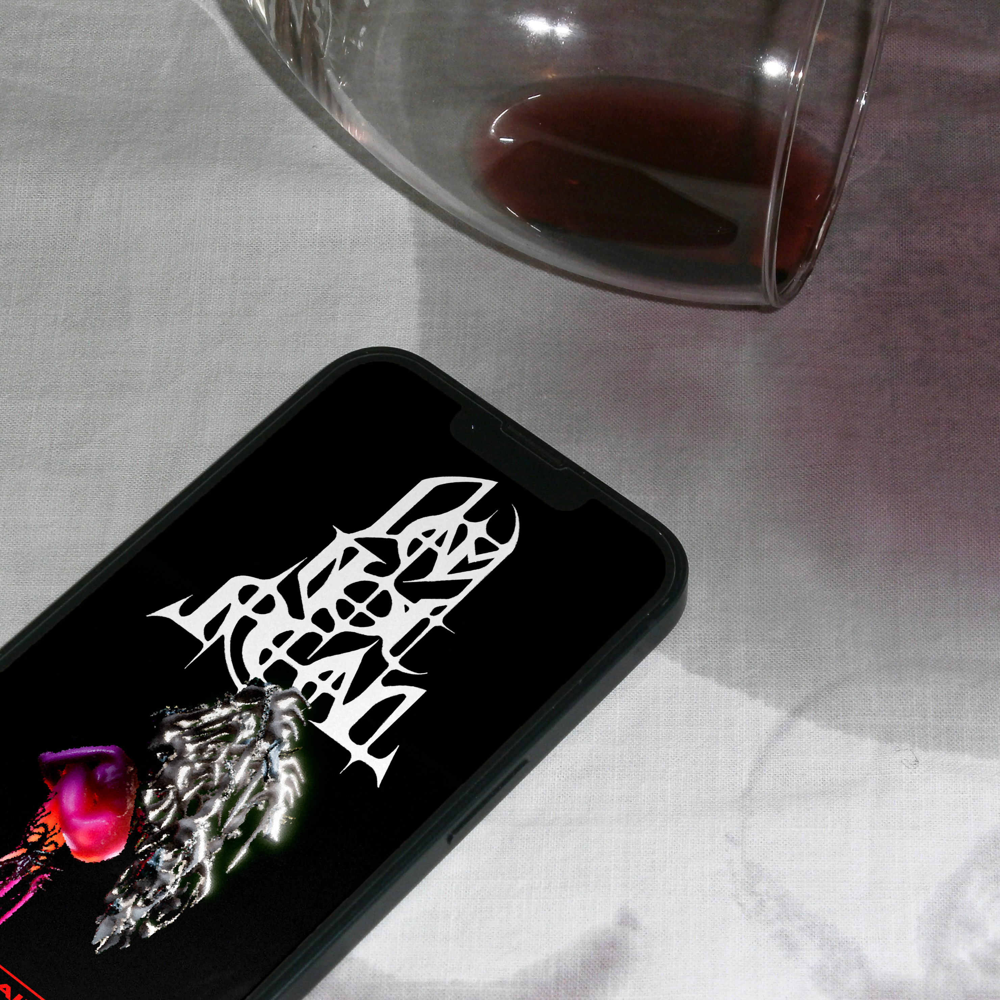

SOTTO SOTTO
TEAM
Simone De Marchi,
Riccardo Luigi Grossi,
Jacopo Pacioni,
Ilaria Urgesi,
Matteo Semeraro
Riccardo Luigi Grossi,
Jacopo Pacioni,
Ilaria Urgesi,
Matteo Semeraro
A website based on the community that populates the Milan Polytechnic.
The project is presented as an archive
that contains various unusual
and peculiar, found by interviewing people, and digging through their bags. Each of these objects has a unique story worth showing and preserving. The goal is to tell the story of a community not through
the visible but by using what cannot be seen, what lies beneath, reachable only by digging, in this case inside bags and backpacks. Stories that expose the funny, human and non-obvious side of people.
The concept contrasts the meaning
of archaeology and digging, with a modern plastic method of preservation,
under vacuum, to keep each object
and its history unchanged over time.
WEB DESIGN
2023


 



 
